Figuring Out Calculations
Figuring Out Calculations
What is a Calculation in OneStream
Cubes are referred to as the financial model in OneStream. Within this model, we calculate (which means, in simple terms, using our imported or manually entered data to compute further for financial reporting), store, and dynamically view the data.
Calculations within an application are a core function and can be written within members (known as Member Formulas), or as a rule (known as business rules), or in Cube Views (known as Cube View Math or expressions).
The more advanced way calculations can also be performed are through Assemblies. These are found under the Workspaces menu and are useful for handling complex calculations and processes. They work by organizing and managing business rules and other source code files, and used by the developer community when, for example, building solutions or creating dashboards.
The administrator chooses the method that is the most appropriate for the calculation task at hand.
This chapter will discuss calculations at a beginner’s level, and administrators will be able to use the knowledge acquired as a springboard to further learning and as a segue to the OneStream Finance Rules and Calculations Handbook.
Here is this chapter’s learning journey:
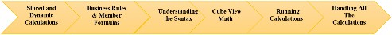
Figure 6.1
We have just mentioned the four ways in which calculations can be written. Before we delve further into some of these methods, it is worth mentioning how calculations can be performed. These can be either stored calculations or dynamic calculations.
Figuring Out Calculations › What is a Calculation in OneStream
Stored Calculations
As the term suggests, these types of calculations have been derived from data in the cube, with the calculated value stored in the database. Our understanding of Data Units will help us further here. If we recall, a Data Unit is a subset of the cube. This Data Unit is made up of cells, and a subset of these cells is known as a data buffer.
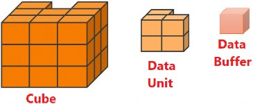
Figure 6.2
The data buffer can consist of all the cells of the Data Unit, or as a subset of cells of the Data Unit.
When a calculation is executed, a first set of data buffers is calculated together with a second set of data buffers. The results are then stored in the database as a third set of data buffers.
For example, in Top Training, for the revenue calculation, we will multiply price by volume. This will comprise of the course prices (data buffer one) multiplied by their volumes sold (data buffer two). The result is the revenue by course (data buffer three).
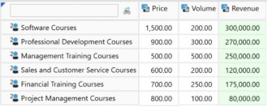
Figure 6.3
Figuring Out Calculations › What is a Calculation in OneStream
Dynamic Calculations
Unlike stored calculations, dynamic calculations process results in-memory (on the fly) when requested by the user. The result is not stored in the database.
The calculation syntax can be created in the dimension library, specifically in the Account, Flow, or User Defined dimensions. It is performed on a cell-by-cell basis (unlike stored calculations working on data buffers), and therefore can run slower for very large reports or complex dynamic calculations.
With our example of price multiplied by volume, the data cell calculation uses a singular value to return another singular value.
We could think about creating a repository of common dynamic calculations that are specific to the organization’s requirements. This is usually done on the UD8 dimension, where each member is a reporting metric that can be used in Cube View rows or columns.
For example, Figure 6.4 shows the VariancePY member, with its Formula Type set to DynamicCalc.
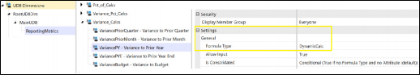
Figure 6.4
Figure 6.5 shows the VariancePY member’s embedded formula. Later, we will look at understanding syntax calculations. As a starting point, though, this formula condition checks the View dimension, and proceeds to run the calculation if the cell is not a text value, and deduces the prior year value from 12 months ago. This then brings back the variance result.
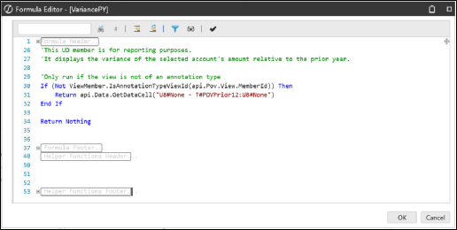
Figure 6.5
Dynamic calculations can also be utilized to pull relational information, such as transactional details, into cube-based and Analytic Blend (data from various sources) reports.
Figuring Out Calculations
What Are Rule Types And Expressions
When it comes to learning OneStream’s rule types and expressions (used within the rule types), knowledge is acquired over time. Administrators will come across scenarios that help understand how syntax gets structured, or how expressions and function names are used.
Let us walk through some rule types, expressions, and functions we will encounter in OneStream documentation.
Figuring Out Calculations
Business Rules
Business rules are written in the Business Rules menu option, found in the Application tab, and contain multiple calculations for different members within the same business rule. Business rules run in sequence, which may mean a longer process time, but have the ability to span across many members.
Figure 6.6 shows an example of a finance business rule type multiplying accounts. These are shown by the red characters. Any green characters are a result of being commented out and are either for supporting narrative or the line is not currently used. These can be uncommented and worked on, if required, for further calculations in the future.
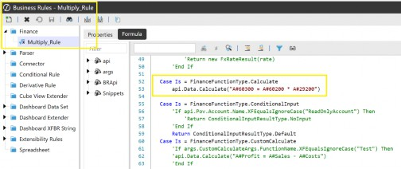
Figure 6.6
A Finance rule type is used for multi-dimensional financial calculations, but there are other rule types within the business rules menu that cater for specific scenarios; for example, the Parser rule type cleans and transforms data before it is loaded.
The Connector rule type assists with mapping and transferring data from external systems, and the Conditional rule type filters out unwanted or irrelevant data during imports, ensuring only clean, usable data is imported into the system.
Business rules can use variables instead of hardcoding string values. This reduces redundancy and makes calculations easier to maintain, and can be used, for example, in complex scenarios such as allocations, cash flow, and custom eliminations.
Figuring Out Calculations
Member Formulas
Member Formula syntax is written on individual dimension members, specifically on Scenario, Account, Flow, or User Defined dimension members in the formula property. If required, the formula within this individual member can reference multiple members. This would then function the same way as business rules.
Using Member Formulas means it is easy to pick individual members and apply a formula; for example, a Sales account calculation or Cost account calculation.
A key feature is the ability to vary the Member Formula by Scenario Type. For example, the calculation formula can be embedded for the Forecast scenario but not for, say, the Actual scenario, where Actuals just need to be loaded from the general ledger system rather than calculated.
We also have the ability to vary the Member Formula by time period. For example, a formula can be applied for Months 1 to 6, before changing in Month 7. The change does not alter the first six months’ calculation, worked on by the initial formula.
Member formulas are processed in parallel, and for general calculations, can be the better performing option.
A unique feature for Member Formulas, compared to business rules, is the ability to add a formula for calculation drill down. This gives the user the capability to drill down on a calculated member in a Cube or Quick View, and can also be varied by Scenario Type and time. The formula works by stipulating a new variable, for example DrillDownFormulaResult() that then stores the result of the drill down operation. Upon drill down, OneStream will check to see if the requested data cell is a calculation and – if so – will provide the source data cells.
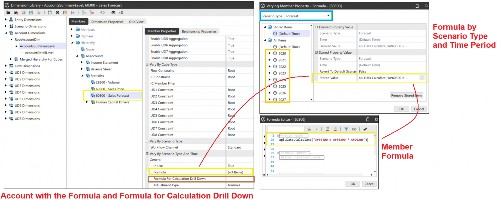
Figure 6.7
Figuring Out Calculations
Cube View Calculations
Cube View calculations are dynamic calculations that are executed when the Cube View is run. The type of calculations that work well with this method (instead of using Member Formulas or business rules) are Key Performance Indicators (KPIs) and variances.
The Member Filter Builder guides the user with predefined syntax options that are useful for calculations on rows and columns.
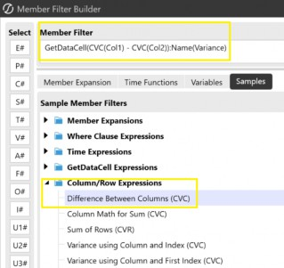
Figure 6.8
When writing calculations, deciding whether it’s a business rule, Member Formula or Cube View calculation will be looked at on a case-by-case basis.
Expressions are used to form the business rule, Member Formula or Cube View calculations. Let’s look at some examples, starting with frequently used GetDataCell.
Figuring Out Calculations › Cube View Calculations
GetDataCell Expression
The GetDataCell expression is commonly used in Cube Views. The calculation is dynamic (but can also be found in business rules). GetDataCell can use specific dimension members to return a data point, and this is a good way to make use of members in the syntax that are not actually in the Cube View. Examples include:
Calculation of the difference between two scenarios:
GetDataCell(S#Scenario1-S#Scenario2):Name(Difference)
Calculation of multiplying two accounts:
GetDataCell(A#Account1*A#Account2):Name(Total)
Note: Total. |
In Top Training, after calculating two accounts using the GetDataCell expression, we have labelled the column Sales Forecast, as shown in Figure 6.9:
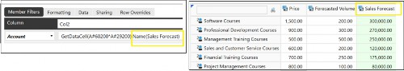
Figure 6.9
With the expression, we can also utilize functions. These are designed to improve performance and shorten the formula as well as avoid errors, such as handling zeros, where for example, dividing by zero will return a null value rather than an error.
Sample expressions can also be found in the Cube View Member Filter Builder. Let us take the GetDataCell expression further and marry it with functions:
Figuring Out Calculations › Cube View Calculations › GetDataCell Expression
Divide Function
Divides two accounts to provide the ratio value.
GetDataCell(Divide(A#Account1,A#Account2)):Name(Ratio) (Note: standard math operators can be used as an alternative,i.e. GetDataCell(A#Account1/A#Account2).
Figuring Out Calculations › Cube View Calculations › GetDataCell Expression
Variance Function
This calculates the difference between the two scenarios as a ratio.
GetDataCell(Variance(S#Scenario1,S#Scenario2)):Name(Variance)
Figuring Out Calculations › Cube View Calculations › GetDataCell Expression
VariancePercent Function
Calculates the difference between two scenarios and then multiplies the result by 100.
GetDataCell(VariancePercent(S#Scenario1,S#Scenario2)):Name(V ar %)
Figuring Out Calculations › Cube View Calculations
api.data.calculate Expression
This expression makes extensive use of data buffers to calculate many values at once, and stores the final value in the database.
For example, if there are 100 numbers in Account1, the below expression takes all 100 numbers that are stored in this data buffer, copies them to a new data buffer, changes the account to Account2, and stores the new set of 100 numbers in the database.
api.data.calculate(“A#Account2=A#Account1”)
Hopefully, you are getting some idea of how the syntax is structured. Shall we take it up one notch? Let’s see if you grasp this next one.
Firstly, you may be familiar with conditional functions, such as IF, THEN, AND, AndAlso, ELSE, END… well, these are no different in OneStream and can be used with expressions.
In the next example, we want to copy our entities’ actual values to a What_If scenario member for us to manipulate further. But we should only copy the base level entities (at their local currency) because we want OneStream to translate and consolidate the What_If scenario parent members from their newly-copied base values. This is as opposed to having the parent member values just copied from one scenario to another. We can structure the formula as follows:
If (Not api.Entity.HasChildren()) AndAlso(api.Cons.IsLocalCurrencyForEntity()))
Then api.Data.Calculate(“S#What_If = S#Actual) End IfNote: To keep this example simple, the chosen dimension levels (which, in effect, refer to the extensibility), are the same for both Actual and What_If, otherwise the formula would require further work. |
The interpretation for this, once again, is for Actual values. If the Entity member does not have children (i.e., it is base level and at that entity’s local currency), copy the value to the What_If scenario.
If you’re feeling good about this last one, then your OneStream formula writing is well underway.
Figuring Out Calculations › Cube View Calculations
Column / Row Expressions
Another type of expression that will be taken further (when we embark on the Reporting Chapter) is to use column names, rather than specific dimension members. This type of formula can be found in Cube Views, referencing what has been used for the column or row name to return a data point. Commonly known as column/row math, this can be helpful for more complex queries.
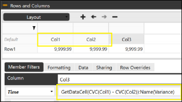
Figure 6.10
Figuring Out Calculations
Understanding The Syntax and Functions
As part of your OneStream learning, writing and understanding calculation syntax (the way the code is structured) helps with the platform’s efficiency, as well as making you a better troubleshooter.
The OneStream platform uses VB.Net (Visual Basic) or C# (C Sharp) for writing rules. For all the non-coders (including the author), it is reassuring to know that a lot can be managed in OneStream without coding, but if the need arises, there are many resources and templates to guide you. Coding is typically done for specialized requirements that don’t fit out-of-the-box configurations or where performance is better with code.
One of the key templates is Snippets, which can be downloaded from the Solution Exchange. It holds a broad range of syntax structures for a particular requirement, where the member placeholders will need replacing with the actual ones required for the calculation to take place. In Figure 6.11, in the left-hand box, we see the full range of the Snippets templates, and the right-hand box shows a sample structure that adds two account members.
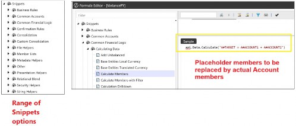
Figure 6.11
Figuring Out Calculations
Other Areas Using Calculations
In previous chapters, we discussed certain artifacts having features that allow the user to execute calculations by simply selecting a menu option rather than being required to write syntax. This is worth revisiting in this chapter.
Figuring Out Calculations › Other Areas Using Calculations
The View Dimension
The View dimension has predefined members that cannot be deleted, renamed, or have additional members added. The data is stored at the YTD member, and then calculations such as Trailing Month Totals, Averages, or Summations are performed just by the user selecting the required member.
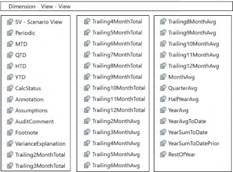
Figure 6.12
Figuring Out Calculations › Other Areas Using Calculations
Account Type and Aggregation Weight
The Account dimension’s parent member’s value is calculated by their child members’ Account Type selection. This is the built-in financial intelligence that determines how child members’ values will roll up to the parent cell. This depends on the type of parent member (i.e., if it is a revenue or expense member). For our example in Figure 6.13, a Revenue account type is a positive roll-up, and an Expense account type a negative roll-up, in the Net Sales parent member.
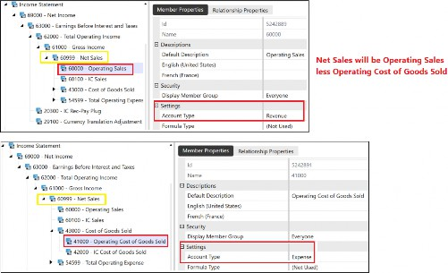
Figure 6.13
Alternatively, the parent value is derived from the child members’ Aggregation Weight in the Relationship Properties tab. This option is found in Account, Flow, and User Defined dimensions.
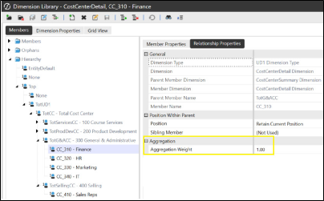
Figure 6.14
Figure 6.14 shows the weight determining how the finance cost center CC_310-Finance will roll-up to TotG&Acc - 300 General & Administrative. The
1.00 signifies a positive roll-up.
Figuring Out Calculations › Other Areas Using Calculations
Calculation, Translation, Elimination, Consolidation
The calculation types that can be executed in the OneStream platform (for example, by clicking the Process button in a workflow) are:
Figuring Out Calculations › Other Areas Using Calculations › Calculation, Translation, Elimination, Consolidation
Calculate
This will run all the calculations that are assigned to members in their Member Formula, or on the cube for each required Data Unit (running through a Data Unit calculation sequence, see below).
Figuring Out Calculations › Other Areas Using Calculations › Calculation, Translation, Elimination, Consolidation
Translate
This will run the calculation, as above, plus – following the calculation run – the data will be translated into the currency of the parent entity (or a selected currency chosen by the user to translate to).
Figuring Out Calculations › Other Areas Using Calculations › Calculation, Translation, Elimination, Consolidation
Consolidate
Consolidate runs calculations and translations for the Data Unit as per the above two steps, and then consolidates data up to the parent entity.
In the OneStream platform, the user can select a few ways to access the menu option to execute standard calculate, translate, or consolidate processes, or use force calculate, force translate, or force consolidate.
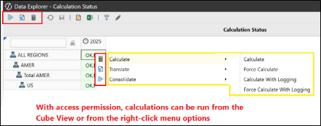
Figure 6.15
The difference between standard calculations and force calculations is that the standard will first check any prior periods (starting with the first period in the current year) to ascertain if the engine needs to execute on each period up to and including the current period. This is determined by what is known as the Calculation Status (see below). If the status is OK, then the calculation will not execute. But with a status of CA, for example, a calculation needs to be applied.
The standard is useful for statutory scenarios where Actuals are being reported for the current month, and prior period Actual values will not have changed.
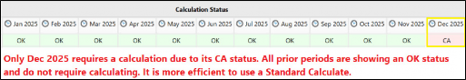
Figure 6.16
With the force option, prior periods – from the first period in the year onwards – will automatically be worked on by the engine, irrespective of status. This is useful for planning cycles where multiple periods are being worked on by many departments, and new data is then loaded, spanning the year. Using force is the most efficient option, because each period does not require to be checked first.
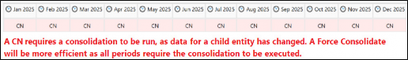
Figure 6.17
Figuring Out Calculations › Other Areas Using Calculations
Calculation Status
To ascertain calculation status before running standard or force, a Cube View can be built where the View dimension has the built-in CalcStatus member. The row and column options will use a defined dimension hierarchy (for example, entities in rows and time in columns). The calculation status is shown by a code that is determined on the data and metadata, and the code status will change when there are changes to either of these.
On the left of Figure 6.18 is an illustration of how a Cube View presents the status. The right-hand box displays what the codes stand for. With codes relatively straightforward to understand, it is worth pointing out OK,MC, which indicates that the calculation has been performed, but due to artifacts related to the Cube, formulas, FX rates, or business rules (all considered metadata changes), then it is advisable to run the calculation again as the results may be different.
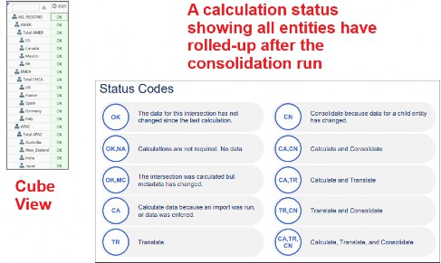
Figure 6.18
Figuring Out Calculations
How Calculations Are Run
Once business rules have been created, they can be embedded in various places around the platform, waiting to be executed, the Cube Properties tab being one of them. At Top Training, we have the business rule named Multiply_Rule in the 200 Americas cube, as shown in Figure 6.19.
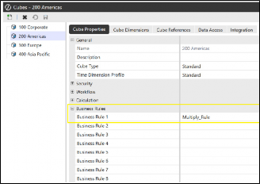
Figure 6.19
We also now know that Member Formulas are embedded in a specific Member Formula field (as previously mentioned and shown earlier in Figure 6.9).
Now, it is a case of knowing where the business rule or Member Formula can be run from. This would have been part of the design, as it may be the administrator who runs it, or the end-user who has been given permission to.
Let’s look at areas where calculations can be run.
Figuring Out Calculations › How Calculations Are Run
Cube View Icons
The three icons highlighted in Figure 6.20 (usually grayed out by default) can be set to True in the General Settings of the Cube View (with security settings determining the final access), and the end-user can click to consolidate, translate, or calculate values. The right-click option also then becomes available and is typically used by administrators.
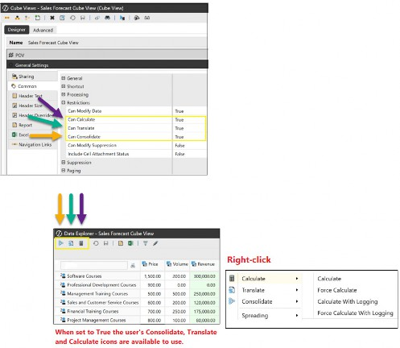
Figure 6.20
Figuring Out Calculations › How Calculations Are Run
Data Management Job
A data management job is a convenient way of executing tasks such as calculate, translate, and consolidate, as well as other tasks such as clear, copy, or export data. The data management artifact is made up of a data management step (or steps) that have been embedded into a data management sequence.
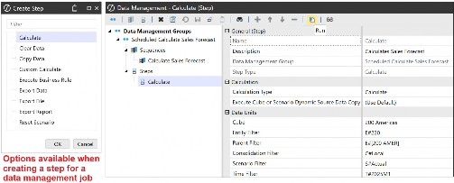
Figure 6.21 A data management job can be executed from:
The Data Management menu
The data source; Data Management Export Sequence option
The calculation definitions within a Workflow Profile. The data management job name can be embedded in the Filter Value field in the Calculation Definitions tab. The data management job will run when the end-user executes the Process task in the OnePlace tab.
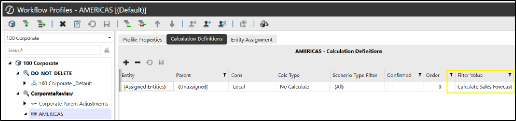
Figure 6.22
Embedded in a business rule. This is discussed in the Finance Rules and Calculations Handbook.
In the Task Scheduler. This is found in the Application tab and can be used to schedule the running of a data management job on a particular day and time.
Dashboard components (see below). The data management job has the option to be run as part of an action for a dashboard button.
Figuring Out Calculations › How Calculations Are Run › Data Management Job
Workflow Profiles – Calculation Definitions
The calculation is set up as part of the workflow task, specifically when the user executes the process step. This is set up in the Calculation Definitions tab of the Workflow Profile, where a selection of Calc Types is available from a drop-down menu.
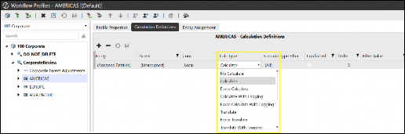
Figure 6.23
Figuring Out Calculations › How Calculations Are Run
Other Options Where A Calculation Can Be Run From
Figuring Out Calculations › How Calculations Are Run › Other Options Where A Calculation Can Be Run From
Dashboard Button
A dashboard button is a component for a dashboard that allows the user to execute a step. When constructing a button, the action section allows for the selection of a calculate option, or (as mentioned in the data management job above) a data management sequence can also be selected.
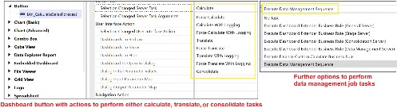
Figure 6.24
Figuring Out Calculations
Data Unit Calculation Sequence (DUCS)
Data Unit Calculation Sequence (DUCS) is a term used to outline the steps involved when a business rule or Member Formula script gets executed.
A DUCS occurs each time a calculation or consolidation is run on a cube. In short, the steps range from clearing the existing calculated, non-durable data in the Scenario (depending on its settings) , checking for any scenario Member Formula, and then alternating between executing groups of business rules and groups of formula passes (e.g., executing business rules 1 and 2 assigned to the cubes then formula passes 1 through 4 for Account, Flow, UD1, then UD2 to UD8. Then business rules 3 and 4, and formula passes 5 through 8, and so on).
As many calculations have dependencies on other calculations, the DUCS will run all the steps each time. This ensures the whole Data Unit is processed before the data is then consolidated. Calculations such as initial allocations, for example, need to be processed first and will therefore be in business rules 1 or 2, before period activity in formula passes 1 to 4.
There may be occasions when running all the steps to only calculate a few values will be over-processing; therefore, methods focusing only on items that need to be part of the calculation are used. For example, a Custom Calculation option has been developed. This function narrows the scope to specific members populated in the Data Unit section of a data management step. This can be more efficient when only specific entities, business areas, or departments need to be processed, rather than the whole Data Unit.
Also, using the If statement preceding the calculation (Member Formula or business rule) will mean the DUCS not being run many more times than it needs to be. In an earlier example, we made sure the calculation only ran for the Local Consolidation Member and Base Entities:
If api.Cons.IsLocalCurrencyForEntity() AndAlso Not api.Entity.HasChildren()
Detailed steps on the DUCS and more on methods to scope calculations are in the
Finance Rules and Calculations Handbook.
Figuring Out Calculations
Handling All The Calculations
Figuring Out Calculations › Handling All The Calculations
Calculation Documentation Matrix
Capturing all the initial calculations required is a discussion that starts in the design phase. Further calculations are then added when the application is live, with all of this captured in good documentation. A calculation matrix can be created, with headings related to the calculation, such as:
Name of calculation; e.g., Margin
Category of calculation; e.g., Key Performance Indicators
Type of calculation (stored or dynamic)
Location in OneStream (business rule or Member Formula)
Syntax, expression (outlining source and target dimension and members), or function (e.g., Profit / Revenue)
Comments; e.g., calculation in Income Statement.
Figuring Out Calculations › Handling All The Calculations
Application Reports And Administrator Solution Tool
Another way to keep track of calculations is by using a suite of standard Application Reports. The key reports are the Formula Statistics Report which provides a breakdown of each dimension with members that have Member Formulas, and a Formula List Report that shows each Member Formula and its syntax.
The Administrator Solution Tool provides a business rule viewer which allows for the viewing of current and historical business rules and Member Formulas. It provides a historical audit trail of all the rules that have been added, edited, or deleted. Further to this, in the Administrator Solution Tool, there is a Member Formula Builder that helps you to create calculations through a guided approach in a user-friendly interface.
Figuring Out Calculations
Conclusion
A lot of OneStream’s functionalities are performed through menu options for both administrators and users. But when calculations are required, the initial design is key since it looks at the most efficient way of doing so. The chosen option may be a Member Formula that targets specific members, or business rules that provide the ability to cover a large area of dimensions and members.
Calculated values can be stored within OneStream, in which case data buffers drive the process, or dynamically calculate on the fly when a report is run.
The way code is structured is referred to as syntax. This can contain expressions, functions, or both. The status code will indicate whether the calculation needs to be run, and this can be initiated from menu options, Cube View icons, a workflow process step, or data management jobs.
This chapter has covered the basics you need when starting to think about rule writing. It is not hard to write syntax, as there are many resources that help, including business rule Snippets, Member Filter builder expressions, or the Member Formula Builder.